- 01 二进制：不了解计算机的源头，你学什么编程.md.html
- 02 余数：原来取余操作本身就是个哈希函数.md.html
- 03 迭代法：不用编程语言的自带函数，你会如何计算平方根？.md.html
- 04 数学归纳法：如何用数学归纳提升代码的运行效率？.md.html
- 05 递归（上）：泛化数学归纳，如何将复杂问题简单化？.md.html
- 06 递归（下）：分而治之，从归并排序到MapReduce.md.html
- 07 排列：如何让计算机学会“田忌赛马”？.md.html
- 08 组合：如何让计算机安排世界杯的赛程？.md.html
- 09 动态规划（上）：如何实现基于编辑距离的查询推荐？.md.html
- 10 动态规划（下）：如何求得状态转移方程并进行编程实现？.md.html
- 11 树的深度优先搜索（上）：如何才能高效率地查字典？.md.html
- 12 树的深度优先搜索（下）：如何才能高效率地查字典？.md.html
- 13 树的广度优先搜索（上）：人际关系的六度理论是真的吗？.md.html
- 14 树的广度优先搜索（下）：为什么双向广度优先搜索的效率更高？.md.html
- 15 从树到图：如何让计算机学会看地图？.md.html
- 16 时间和空间复杂度（上）：优化性能是否只是“纸上谈兵”？.md.html
- 17 时间和空间复杂度（下）：如何使用六个法则进行复杂度分析？.md.html
- 18 总结课：数据结构、编程语句和基础算法体现了哪些数学思想？.md.html
- 19 概率和统计：编程为什么需要概率和统计？.md.html
- 20 概率基础（上）：一篇文章帮你理解随机变量、概率分布和期望值.md.html
- 21 概率基础（下）：联合概率、条件概率和贝叶斯法则，这些概率公式究竟能做什么？.md.html
- 22 朴素贝叶斯：如何让计算机学会自动分类？.md.html
- 23 文本分类：如何区分特定类型的新闻？.md.html
- 24 语言模型：如何使用链式法则和马尔科夫假设简化概率模型？.md.html
- 25 马尔科夫模型：从PageRank到语音识别，背后是什么模型在支撑？.md.html
- 26 信息熵：如何通过几个问题，测出你对应的武侠人物？.md.html
- 27 决策树：信息增益、增益比率和基尼指数的运用.md.html
- 28 熵、信息增益和卡方：如何寻找关键特征？.md.html
- 29 归一化和标准化：各种特征如何综合才是最合理的？.md.html
- 30 统计意义（上）：如何通过显著性检验，判断你的A_B测试结果是不是巧合？.md.html
- 31 统计意义（下）：如何通过显著性检验，判断你的A_B测试结果是不是巧合？.md.html
- 32 概率统计篇答疑和总结：为什么会有欠拟合和过拟合？.md.html
- 33 线性代数：线性代数到底都讲了些什么？.md.html
- 34 向量空间模型：如何让计算机理解现实事物之间的关系？.md.html
- 35 文本检索：如何让计算机处理自然语言？.md.html
- 36 文本聚类：如何过滤冗余的新闻？.md.html
- 37 矩阵（上）：如何使用矩阵操作进行PageRank计算？.md.html
- 38 矩阵（下）：如何使用矩阵操作进行协同过滤推荐？.md.html
- 39 线性回归（上）：如何使用高斯消元求解线性方程组？.md.html
- 40 线性回归（中）：如何使用最小二乘法进行直线拟合？.md.html
- 41 线性回归（下）：如何使用最小二乘法进行效果验证？.md.html
- 42 PCA主成分分析（上）：如何利用协方差矩阵来降维？.md.html
- 43 PCA主成分分析（下）：为什么要计算协方差矩阵的特征值和特征向量？.md.html
- 44 奇异值分解：如何挖掘潜在的语义关系？.md.html
- 45 线性代数篇答疑和总结：矩阵乘法的几何意义是什么？.md.html
- 46 缓存系统：如何通过哈希表和队列实现高效访问？.md.html
- 47 搜索引擎（上）：如何通过倒排索引和向量空间模型，打造一个简单的搜索引擎？.md.html
- 48 搜索引擎（下）：如何通过查询的分类，让电商平台的搜索结果更相关？.md.html
- 49 推荐系统（上）：如何实现基于相似度的协同过滤？.md.html
- 50 推荐系统（下）：如何通过SVD分析用户和物品的矩阵？.md.html
- 51 综合应用篇答疑和总结：如何进行个性化用户画像的设计？.md.html
- 导读：程序员应该怎么学数学？.md.html
- 开篇词 作为程序员，为什么你应该学好数学？.md.html
- 数学专栏课外加餐（一） 我们为什么需要反码和补码？.md.html
- 数学专栏课外加餐（三）：程序员需要读哪些数学书？.md.html
- 数学专栏课外加餐（二） 位操作的三个应用实例.md.html
- 结束语 从数学到编程，本身就是一个很长的链条.md.html
- 捐赠
24 语言模型：如何使用链式法则和马尔科夫假设简化概率模型？
你好，我是黄申。
之前我给你介绍了用于分类的朴素贝叶斯算法。我们讲了，朴素贝叶斯算法可以利用贝叶斯定理和变量之间的独立性，预测一篇文章属于某个分类的概率。除了朴素贝叶斯分类，概率的知识还广泛地运用在其他机器学习算法中，例如语言模型、马尔科夫模型、决策树等等。
今天我就来说说，基于概率和统计的语言模型。语言模型在不同的领域、不同的学派都有不同的定义和实现，因此为了避免歧义，我这里先说明一下，我们谈到的语言模型，都是指基于概率和统计的模型。
语言模型是什么？
在解释语言模型之前，我们先来看两个重要的概念。第一个是链式法则，第二个是马尔科夫假设及其对应的多元文法模型。为什么要先说这两个概念呢？这是因为链式法则可以把联合概率转化为条件概率，而马尔科夫假设通过变量间的独立性来减少条件概率中的随机变量，两者结合就可以大幅简化计算的复杂度。
1.链式法则
链式法则是概率论中一个常用法则。它使用一系列条件概率和边缘概率，来推导联合概率，我用一个公式来给你看看它的具体表现形式。
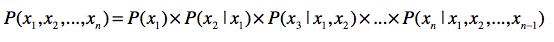
其中，\(x\_{1}\)到\(x\_{n}\)表示了n个随机变量。
这个公式是怎么来的呢？你还记得联合概率、条件概率和边缘概率之间的“三角”关系吗？我们用这三者的关系来推导一下，最终我们可以得到链式法则。
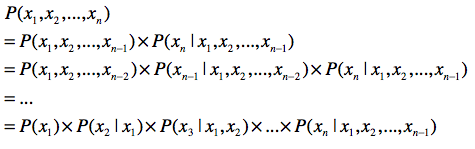
推导的每一步，都是使用了三种概率之间的关系，这个应该不难理解。
2.马尔科夫假设
理解了链式法则，我们再来看看马尔可夫假设。这个假设的内容是：任何一个词\(w\_{i}\)出现的概率只和它前面的1个或若干个词有关。基于这个假设，我们可以提出多元文法（Ngram）模型。Ngram中的“N”很重要，它表示任何一个词出现的概率，只和它前面的N-1个词有关。
我以二元文法模型为例，来给你解释。按照刚才的说法，二元文法表示，某个单词出现的概率只和它前面的1个单词有关。也就是说，即使某个单词出现在一个很长的句子中，我们也只需要看前面那1个单词。用公式来表示出来就是这样：
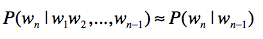
如果是三元文法，就说明某个单词出现的概率只和它前面的2个单词有关。即使某个单词出现在很长的一个句子中，它也只看相邻的前2个单词。用公式来表达就是这样：
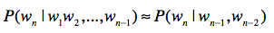
你也许会好奇，那么一元文法呢？按照字面的意思，就是每个单词出现的概率和前面0个单词有关。这其实说明，每个词的出现都是相互独立的。用公式来表达就是这样的：
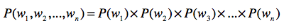
弄明白链式法则和马尔科夫假设之后，我们现在来看语言模型。
假设我们有一个统计样本文本\(d\)，\(s\)表示某个有意义的句子，由一连串按照特定顺序排列的词\(w\_{1}，w\_{2},…,w\_{n}\)组成，这里\(n\)是句子里单词的数量。现在，我们想知道根据文档d的统计数据，\(s\)在文本中出现的可能性，即\(P(s|d)\)，那么我们可以把它表示为\(P(s|d)=P(w\_{1}, w\_{2}, …, w\_{n} | d\))。假设我们这里考虑的都是在集合d的情况下发生的概率，所以可以忽略\(d\)，写为\(P(s)=P(w\_{1}, w\_{2}, …, w\_{n})\)。
到这里，我们碰到了第一个难题，就是如何计算\(P(w\_{1}, w\_{2}, …, w\_{n})\)要在集合中找到一模一样的句子，基本是不可能的。这个时候，我们就需要使用链式法则。我们可以把这个式子改写为：
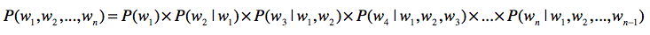
乍一看，问题似乎是解决了。因为通过文档集合C，你可以知道\(P(w\_{1})\)，\(P(w\_{2}|w\_{1})\)这种概率。不过，再往后看，好像\(P(w\_{3}|w\_{1},w\_{2})\)出现概率很低，\(P(w\_{4}|w\_{1},w\_{2},w\_{3})\)出现的概率就更低了。一直到\(P(w\_{n}|w\_{1}, w\_{2}, …, w\_{n-1})\)，基本上又为0了。我们可以使用上一节提到的平滑技巧，减少0概率的出现。不过，如果太多的概率都是通过平滑的方式而得到的，那么模型和真实的数据分布之间的差距就会加大，最终预测的效果也会很差，所以平滑也不是解决0概率的最终办法。
除此之外，\(P(w\_{1}, w\_{2}, …, w\_{n})和P(w\_{n}|w\_{1}, w\_{2}, …, w\_{n-1})\)还不只会导致0概率，它还会使得模型存储空间的急速增加。
为了统计现有文档集合中\(P(w\_{1}, w\_{2}, …, w\_{n})\)这类值，我们就需要生成很多的计数器。我们假设文档集合中有m个不同的单词，那么从中挑出\(n\)个单词的可重复排列，数量就是\(m^{n}\)。此外，还有\(m^{n-1}\), \(m^{n-2}\)等等。这也意味着，如果要统计并存储的所有\(P(w\_{1}, w\_{2}, …, w\_{n})\)或\(P(w\_{n}|w\_{1}, w\_{2}, …, w\_{n-1})\)这类概率，就需要大量的内存和磁盘空间。当然，你可以做一些简化，不考虑单词出现的顺序，那么问题就变成了可重复组合，但是数量仍然非常巨大。
如何解决0概率和高复杂度的问题呢？马尔科夫假设和多元文法模型能帮上大忙了。如果我们使用三元文法模型，上述公式可以改写为：
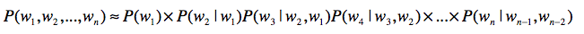
这样，系统的复杂度大致在(C(m, 1) + C(m, 2) + C(m, 3))这个数量级，而且\(P(w\_{n}|w\_{n-2}, w\_{n-1})\)为0的概率也会大大低于\(P(w\_{n}|w\_{1}, w\_{2}, …, w\_{n-1})\) （其中\(n>>3\)）为0的概率。当然，多元文法模型中的N还是不能太大。随着N的增大，系统复杂度仍然会快速升高，就无法体现出多元文法的优势了。
语言模型的应用
基于概率的语言模型，本身不是新兴的技术。它已经在机器翻译、语音识别和中文分词中得到了成功应用。近几年来，人们也开始在信息检索领域中尝试语言模型。下面我就来讲讲语言模型在信息检索和中文分词这两个方面是如何发挥作用的。
1.信息检索
信息检索很关心的一个问题就是相关性，也就是说，给定一个查询，哪篇文档是更相关的呢？为了解决相关性问题，布尔模型和向量空间检索模型都是从查询的角度出发，观察查询和文档之间的相似程度，并以此来决定如何找出相关的文档。这里的“相似程度”，你可以理解为两者长得有多像。那么，语言模型如何来刻画查询和文档之间的相关度呢？
它不再使用相似度定义，而是采用了概率。一种常见的做法是计算\(P(d|q)\)，其中\(q\)表示一个查询，\(d\)表示一篇文档。\(P(d|q)\)表示用户输入查询\(q\)的情况下，文档\(d\)出现的概率是多少？如果这个概率越高，我们就认为\(q\)和\(d\)之间的相关性越高。
通过我们手头的文档集合，并不能直接获得\(P(d|q)\)。好在我们已经学习过了贝叶斯定理，通过这个定理，我们可以将\(P(d|q)\)重写如下：
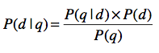
对于同一个查询，其出现概率\(P(q)\)都是相同的，同一个文档\(d\)的出现概率\(P(d)\)也是固定的。因此它们可以忽略，我们只要关注如何计算\(P(q|d)\)。而语言模型，为我们解决了如何计算\(P(q|d)\)的问题，让\(k\_{1}, k\_{2}, …, k\_{n}\)表示查询q里包含的\(n\)个关键词。那么根据之前的链式法则公式，可以重写为这样：
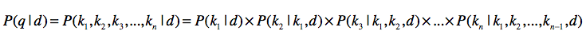
为了提升效率，我们也使用马尔科夫假设和多元文法。假设是三元文法，那么我们可以写成这样：
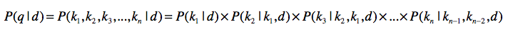
最终，当用户输入一个查询\(q\)之后，对于每一篇文档\(d\)，我们都能获得\(P(d|q)\)的值。根据每篇文档所获得的\(P(d|q)\)这个值，由高到低对所有的文档进行排序。这就是语言模型在信息检索中的常见用法。
2.中文分词
和拉丁语系不同，中文存在分词的问题。如果想进行分词，你就可以使用语言模型。我举个例子给你解释一下，你就明白了。
最普遍的分词方法之一是基于常用词的词典。如果一个尚未分词的句子里发现了存在于字典里的词，我们就认为找到一个新的词，并把它切分出来。这种切分不会出现完全离谱的结果，但是无法解决某些歧义。我下面来举个例子，原句是“兵乓球拍卖完了”。我在读的时候，会有所停顿，你就能理解分词应该如何进行。可是，仅仅从书面来看，至少有以下几种分词方式：
第一种，兵乓|球|拍卖|完了
第二种，兵乓球|拍卖|完了
第三种，兵乓|球拍|卖完|了
第四种，兵乓|球拍|卖|完了
上面分词的例子，从字面来看都是合理的，所以这种歧义无法通过这句话本身来解决。那么这种情况下，语言模型能为我们做什么呢？我们知道，语言模型是基于大量的语料来统计的，所以我们可以使用这个模型来估算，哪种情况更合理。
假设整个文档集合是D，要分词的句子是\(s\)，分词结果为\(w\_{1}\), … \(w\_{n}\)，那么我们可以求\(P(s)\)的概率为：
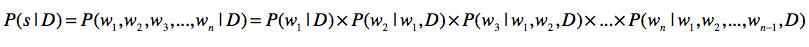
请注意，在信息检索中，我们关心的是每篇文章产生一个句子（也就是查询）的概率，而这里可以是整个文档集合D产生一个句子的概率。
根据链式法则和三元文法模型，那么上面的式子可以重写为：
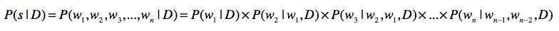
也就是说，语言模型可以帮我们估计某种分词结果，在文档集合中出现的概率。但是由于不同的分词方法，会导致\(w\_{1}\)到\(w\_{n}\)的不同，因此就会产生不同的\(P(s)\)。接下来，我们只要取最大的\(P(s)\)，并假设这种分词方式是最合理的，就可以在一定程度上解决歧义。我们可以使用这个公式来求解：
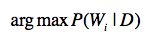
其中，\(W\_{i}\)表示第\(i\)种分词方法。
回到“兵乓球拍卖完了”这句话，如果文档集合都是讲述的有关体育用品的销售，而不是拍卖行，那么“兵乓|球拍|卖完|了”这种分词的可能性应该更高。
小结
这一节，我介绍了基于概率论的语言模型，以及它在信息检索和中文分词领域中的应用。这一节的公式比较多，你刚开始看可能觉得有点犯晕。不用急，我给你梳理了几个要点，你只要掌握这几个要点，依次再进行细节学习，就会事半功倍。
第一，使用联合概率，条件概率和边缘概率的“三角”关系，进行相互推导。链式法则就是很好的体现。
第二，使用马尔科夫假设，把受较多随机变量影响的条件概率，简化为受较少随机变量影响的条件概率，甚至是边缘概率。
第三，使用贝叶斯定理，通过先验概率推导后验概率。在信息检索中，给定查询的情况下推导文档的概率，就需要用到这个定理。
如果你记住了这几点，那么不仅能很快地理解本篇的内容，还能根据实际需求，设计出满足自己需要的语言模型。
思考题
在中文分词的时候，我们也可以考虑文章的分类。比如，这样一句话“使用纯净水源浇灌的大米”，正确的切分应该是：
使用|纯净|水源|浇灌|的|大米
如果我们知道这句描述来自于“大米”类商品，而不是“纯净水”类商品，那么就不会错误地切分为：
使用|纯净水|源|浇灌|的|大米
想想看，如何对我介绍的语言模型加以改进，把分类信息也包含进去？
欢迎留言和我分享，也欢迎你在留言区写下今天的学习笔记。你可以点击“请朋友读”，把今天的内容分享给你的好友，和他一起精进。
© 2019 - 2023 Liangliang Lee. Powered by gin and hexo-theme-book.